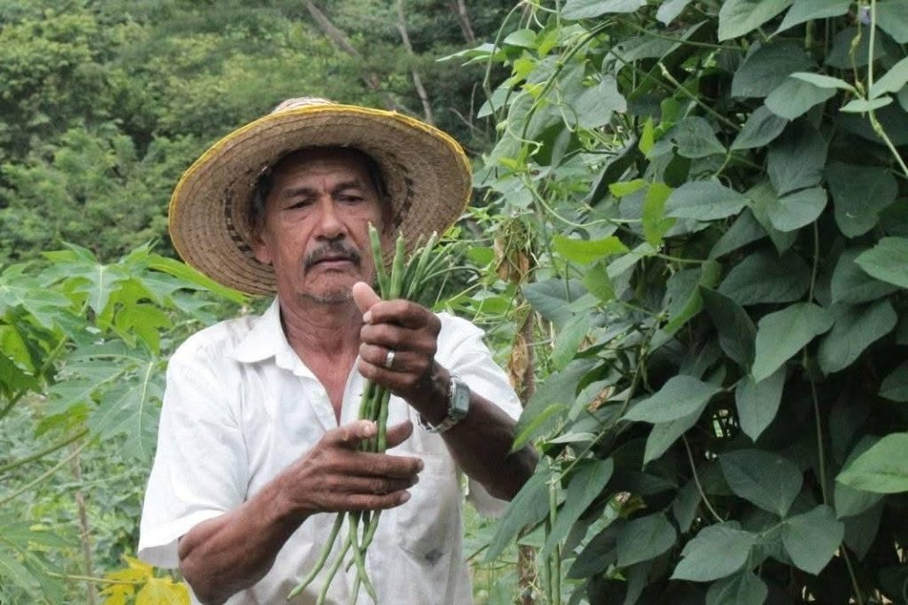
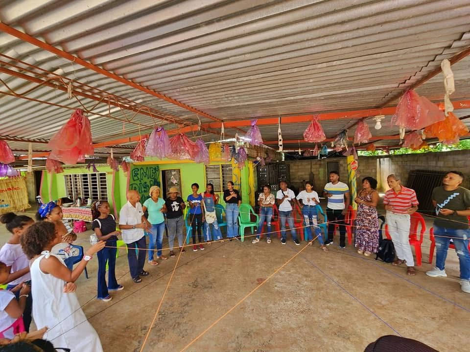
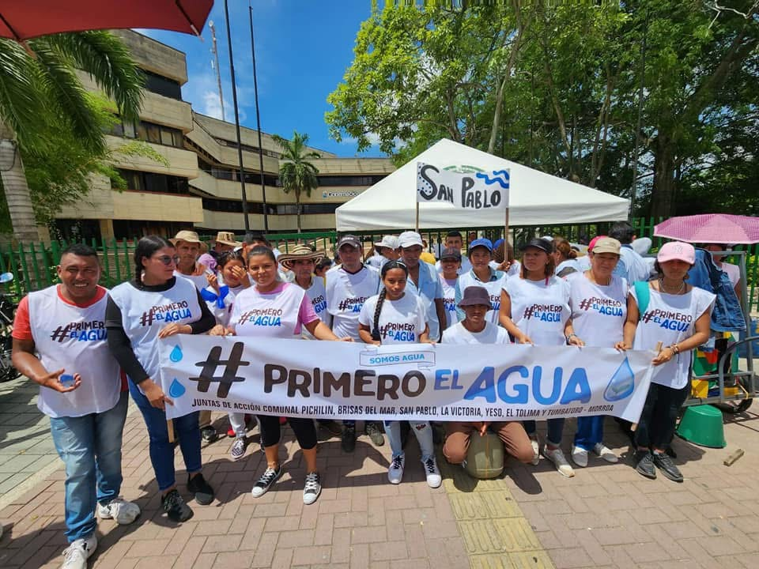
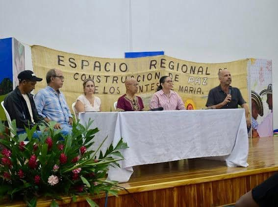

Our impact
Sembrandopaz has achieved significant impact in the region, working with children, youth, women, displaced people, Afrocolombians, local authorities, community organizations, victims of the armed conflict, farmers and churches for more than two decades.

Working with local and departmental governments, the national government’s Victims Unit, and community leaders.

Organizing peaceful marches in communities affected by violence and weak government, to demand reparations and investment from local and national governments, leading to high level negotiations, development plans and agreements to be implemented in local communities.

Initiating and facilitating multiple civil society spaces, including the Sucre Peace Roundtable, the Human Rights Defenders Roundtable in Sucre, the Citizens’ Commission for Reconciliation and Peace of the Caribbean, and the Regional Peacebuilding Space of Montes de María, all spaces to organize civil society and respond to the current political situation with regional networking and advocacy.

small-scale farmers trained in sustainable agricultural methods, giving them the tools to better compete in the agricultural market
teams of local leaders formed in communities affected by the conflict
small-scale production projects funded, fostering community economic development
hectares of Dry Tropical Forest recovered, the most endangered forest ecosystem in the world
Since Sembrandopaz arrived to this region, life changed. And it’s the only organization that has come. As they say, blessings arrived. And we have learned so much.
We don’t even know how far Sembrandopaz’s impact reaches, it is all over the world.